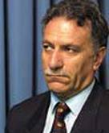

|
|

حکم محمد علی دادخواه: ده سال زندان و محرومیت از تدریس
يكشنبه12 تیر 1390
بی بی سی: محمد علی دادخواه وکیل دادگستری و سخنگوی کانون مدافعان حقوق بشر بنابر حکم دادگاه اولیه به ده سال زندان، ده سال محرومیت از تدریس در دانشگاه و همچنین شلاق و جزای نقدی محکوم شد.
آقای دادخواه ضمن تایید این خبر در گفت و گو با بی بی سی فارسی گفت: "بر اساس این حکم من به ده سال ممنوعیت از وکالت در دادگستری، هشت سال زندان به علت براندازی نرم و سخنگویی کانون مدافعان حقوق بشر ، یک سال زندان به علت تبلیغ علیه نظام و جمهوری اسلامی و همچنین به شلاق و چند فقره جزای نقدی محکوم شده ام."